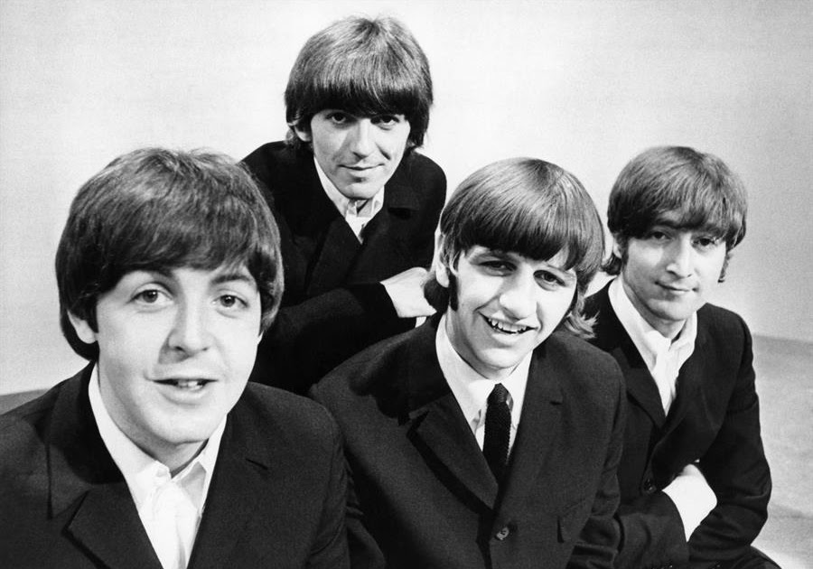
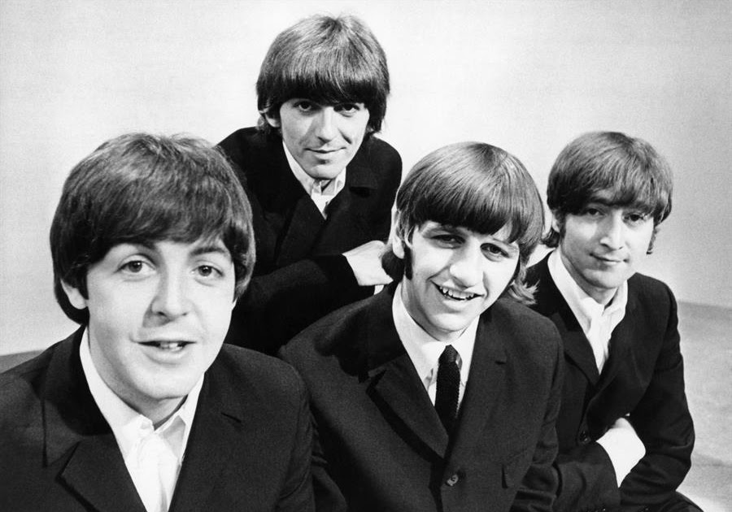

50 curiosidades sobre os beatles
1. Paul McCartney e John Lennon se conheceram em uma quermesse no ano de 1957. Na época, Lennon tinha uma banda chamada The Quarrymen, que se apresentou naquele dia no local.
2. O grupo teve outros nomes, antes de serem conhecidos como The Beatles (e antes de Ringo integrar a banda): Johnny & The Mundongs e The Silver Beatles.
3. Em 1961, os Beatles fizeram sua 1ª apresentação no Cavern Club, em Liverpool. No período de dois anos, a banda tocou 294 vezes no local.
4. O primeiro single da banda, Love Me Do, foi lançado em 5 de outubro de 1962. Em 31 de dezembro de 2012, a canção passou a ser de domínio público na Europa.
5. Abbey Road, de 1969, foi o primeiro álbum da banda a ser lançado somente em estéreo, e não em mono, como era de costume até então.
6. As maiores influências vocais dos Beatles foram as bandas The Beach Boys e The Everly Brothers.
7. Após a separação do quarteto, os músicos seguiram em carreira solo. George Harrison foi o primeiro ex-Beatle a chegar ao topo das paradas de sucesso no Reino Unido com a música My Sweet Lord.
8. Já em carreira solo, Paul McCartney tocou no Brasil pela primeira vez em abril de 1990, no Maracanã, no Rio de Janeiro. Não foi a primeira vez que um ex-Beatle visitou o país: em 1979, Harrison assistiu ao Grande Prêmio do Brasil de Fórmula 1, no autódromo de Interlagos, em São Paulo, a convite do piloto Émerson Fittipaldi.
9. A faixa Across the Universe, do álbum Let It Be, tem a participação de uma brasileira. Em 1968, Lizzie Bravo (com apenas 17 anos na época) estava em Londres, perto da gravadora da banda, quando Paul McCartney a chamou para gravar agudos na música.
10. No primeiro semestre de 2022, a discografia dos Beatles será guardada em um cofre no Polo Norte, capaz de suportar um apocalipse nuclear, para que as cópias possam ficar preservadas por mais de mil anos. Além disso, para garantir que as músicas possam ser escutadas no futuro, serão guardadas tanto cópias físicas quanto digitais.
11. Para o último álbum gravado por eles, os Beatles decidiram fazer uma capa única, que rende um capítulo à parte. Para ser feito o registro em que John, Paul, Ringo e George atravessam a Abbey Road, foi necessário apoio.
As fotos foram tiradas na frente do estúdio, porém pela manhã, para evitar o assédio dos fãs. A polícia fechou o trânsito por 10 minutos para que o fotógrafo Iain McMillan fizesse seu trabalho.
12. A inspiração para a foto veio de Paul McCartney, que decidiu brincar com o boato de que ele havia morrido em um acidente de carro anos antes e foi substituído. Na capa, é possível ver várias referências dessa teoria, olha só:
Paul é o único que está descalço, representando um rito funerário;
Ele segura o cigarro na mão direita, sendo que ele é canhoto;
A vestimenta também diz muito: Paul, de terno, está morto; John de branco, representa uma divindade; Ringo de preto é o padre, e George, de jeans, é o coveiro;
A placa do carro também sua mensagem: as letras LMW é uma abreviação de Linda McCartney Widow (viúva);
O próprio Paul satirizou a ideia em seu disco solo Paul Is Live, em que volta à famosa rua para desconstruir todas as suposições.
13. Yesterday é uma das maiores músicas dos Beatles e é tão memorável que leva o título de música mais regravada por outros artistas ao longo da história. O engraçado é que quando escreveu a canção, McCartney estava inseguro sobre a sonoridade dela, pois, para ele, soava mais como uma balada do que com um rock que eles faziam.
14. Os óculos de Lennon são um símbolo do cantor e ele apareceu com o item quando o The Beatles já estava consolidado no mercado. Porém, John já precisava deles desde o começo, apenas não usava em público por vaidade.
15. John Lennon formou uma banda chamada Quarry Men em 1957 e mais tarde convidou Paul McCartney para participar. Paul trouxe George Harrison, que mais tarde substituiria Peter Best como baterista por Ringo Starr. A banda mudou de nome várias vezes, incluindo Johnny and the Moondogs, The Rainbows e British Everly Brothers.
16. Os Beatles permaneceram em primeiro lugar nas paradas por 175 semanas.
17. O álbum número 1 consecutivo mais longo dos Beatles foi seu álbum de estreia “Please Please Me” com 30 semanas.
18. Ninguém sabe ao certo de onde veio o nome "The Beatles", embora a história mais provável seja que John Lennon gostou do nome The Crickets por causa da banda de Buddy Holly. O ex-membro da banda Stuart Sutcliff sugeriu os “Beetles”, e antes de se tornarem os Beatles, eles eram conhecidos como The Silver Beetles, e às vezes Long John e Silver Beatles. Os Beatles também são uma gangue rival no filme " The Wild One ", de Marlon Brando, que também pode ter sido uma influência. John Lennon é frequentemente creditado por mudar a ortografia para "Beatles" para refletir a música Beat e a geração Beat.
19. Em 23 de julho de 1964, os Beatles tiraram os Rolling Stones do primeiro lugar nas paradas de singles e álbuns, a única banda na história a ter um "duplo hit".
20. O primeiro álbum dos Beatles que conseguiu estrear em primeiro lugar foi “Help!”.
21. O primeiro single dos Beatles em 1962 foi "Love Me Do". Em 2012, a música tornou-se domínio público na Europa.
22. A última apresentação ao vivo dos Beatles foi no Candlestick Park, em San Francisco, em 1966.
23. Todos os membros dos Beatles contraíram gonorreia em Hamburgo no início de suas carreiras.
24. O single mais longo dos Beatles é "Hey Jude", com 7:15 minutos. Foi também o primeiro produto a ser lançado sob o rótulo da Apple.
25. Os Beatles tornaram-se um catalisador do boêmio e do ativismo, impulsionando movimentos como a libertação das mulheres, a libertação gay e o ambientalismo.
26. O primeiro Beatles a se tornar avô foi Ringo, cuja neta Tatia Jayne nasceu em 1985.
27. John Lennon disse que as únicas músicas reais que ele escreveu foram "Help!" e "Strawberry Fields Forever". Ele disse que foram as únicas músicas que ele escreveu por experiência e não por se projetar em uma situação e "escrever uma pequena história legal sobre isso".
28. "Julia" é a única música dos Beatles que John Lennon cantou sem a ajuda dos outros membros da banda. "Blackbird" é a única música solo de Paul como membro dos Beatles.
29. A música "Blue Jay Way", de George Harrison, fez com que aquela placa de rua em Los Angeles fosse repetidamente roubada. A música foi escrita em uma casa na Blue Jay Way em Hollywood Hills.
30. O último álbum que os Beatles gravaram foi Abbey Road, já o último álbum lançado foi Let It Be.
31. O cantor e ator Frank Sinatra descreveu a música "Something" como a maior canção de amor de todos os tempos.
32. Em "Hey Jude", Paul McCartney pode ser ouvido dizendo "Oh f***ing hell" depois de cometer um erro durante a gravação da música.
33. A música dos Beatles "Got to Get You into My Life" (1966) é frequentemente considerada sobre uma garota, mas McCartney mais tarde afirmou que era na verdade maconha.
34. Os Beatles foram o número 1 sete vezes seguidas, atrás apenas de Abba e Led Zeppelin, que têm oito.
35. A música dos Beatles "Lucy in Sky with Diamonds" causou polêmica porque muitos acreditavam que era uma referência ao LSD. Lennon, que escreveu a música, negou as alegações. Outros acreditam que a verdadeira referência foi uma garota chamada Lucy Worden (colega de classe de seu filho Julian) que sofria de lúpus grave.
36. O primeiro álbum de rock britânico a apresentar letras impressas para todas as músicas foi Sgt. Pepper's Lonely Hearts Club Band.
37. No final de "Strawberry Fields Forever", John Lennon parece estar murmurando algo parecido com "eu enterrei Paul", alimentando os rumores de que "Paul está morto". Na verdade, ele disse algo como “molho de cranberry”.
38. "Flying" e "Dig It" são as duas únicas faixas do álbum a serem cantadas pelos quatro Beatles.
39. O mais próximo que os Beatles chegaram de uma reunião após a separação em 1970 foi no casamento do cantor Eric Clapton com a modelo Pattie Boyd em 1979. McCartney, Harrison e Starr compareceram ao show, mas Lennon não.
40. Os Beatles foram formados em Liverpool em 1960 e sua formação mais famosa inclui John Lennon, Paul McCartney, George Harrison e Ringo Starr. Sua música está enraizada na balada, jazz e pop alegre influenciado pelo blues da década de 1950. Também se apropriou de vários gêneros, incluindo pop-folk e rock psicodélico.
41. Em 17 de dezembro de 1960, os Beatles fizeram sua estreia no Reino Unido no The Casbah Coffee Club, em Liverpool.
42. Carl Sagan, astrônomo que trabalhou no projeto Voyager na década de 1970, queria incluir a música "Here Comes the Sun" no Voyager Gold Record para retratar a diversidade da vida e da cultura na Terra. Enquanto os Beatles favoreceram a ideia, sua gravadora EMI se recusou a liberar os direitos e não foi incluída.
43. Os Beatles compraram uma ilha particular na Grécia, esperando morar lá juntos, longe dos fãs gritando. Mais tarde, eles venderam a ilha quando se separaram.
44. Durante a semana de 4 de abril de 1964, a banda ocupou 12 posições na Billboard Hot 100, incluindo o top 5. Ninguém quebrou esse recorde.
45. Em 31 de dezembro de 1970, Paul McCartney entrou com uma ação contra três outros membros da banda, para dissolver a parceria contratual dos Beatles. A associação foi completamente dissolvida em 9 de janeiro de 1975.
46. O período de 1973 a 1975 ficou conhecido como "O Fim de Semana Perdido de Lennon". John Lennon ficou temporariamente separado de Yoko Ono, e fugiu para Los Angeles com sua assistente/amante May Pang. Lá, ele completou três álbuns para Ringo Starr e Harry Nilsson. Gravou com David Bowie, Mick Jagger e Elton John. Em 28 de março de 1974, John Lennon e Paul McCartney fizeram sua única gravação pós-Beatles.
47. Várias das músicas dos Beatles podem ajudar crianças com autismo e outras deficiências, apontaram alguns pesquisadores. Especificamente, eles referenciaram as músicas "Here Comes the Sun", "Yellow Submarine", "Octopus' Garden", "Blackbird", "Hello Goodbye" e "Lucy in the Sky with Diamonds".
48. Os Beatles são a banda mais famosa da história da música, e o rei do rock Elvis Presley é o artista solo mais famoso.
49. Os Beatles queriam participar de uma versão cinematográfica de O Senhor dos Anéis e queriam que Stanley Kubrick a dirigisse.
50. O álbum de estreia dos Beatles foi intitulado "Please Please Me".

 
